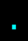

記号 . のモンスター / Monsters with symbol .
画面上で . と表示されるモンスター（12 種）。
Monsters displayed as . on screen (12).
← 記号から探す / Browse by symbol · モンスター索引 / Index
| ID | 記号 / Sym | 名前 / Name | 階層 / Lv | 希少度 / Rar | 速度 / Spd | 体力 / HP | AC | 経験値 / Exp |
|---|---|---|---|---|---|---|---|---|
| 144 | スペース・モンスター Space monster |
8 | 2 | 110 | 21d8 | 14 | 28 | |
| 247 | ラーカー Lurker |
14 | 3 | 110 | 20d10 | 25 | 80 | |
| 333 | 地雷 Landmine |
20 | 5 | 110 | 6d6 | 25 | 50 | |
| 393 | それ It |
26 | 3 | 110 | 77d11 | 80 | 800 | |
| 458 | カオス・タイル Chaos tile |
29 | 6 | 120 | 3d5 | 60 | 120 | |
| 868 | ビハインダー Behinder |
30 | 100 | 125 | 30d20 | 45 | 900 | |
| 565 | トラッパー Trapper |
36 | 3 | 120 | 60d10 | 75 | 580 | |
| 567 | 時限爆弾 Time bomb |
36 | 5 | 130 | 12d12 | 40 | 50 | |
| 1276 | 点『P』 Point P |
39 | 5 | 140 | 10d100 | 50 | 3800 | |
| 678 | 異次元の色彩 Colour out of space |
43 | 2 | 120 | 12d100 | 100 | 8000 | |
| 889 |  |
活発な機雷 Bouncing mine |
70 | 6 | 120 | 40d15 | 10 | 2000 |
| 803 | 生ける虚無『ヌル』 Null the Living Void |
72 | 2 | 125 | 65d100 | 100 | 32500 |
🤖 このページは
lib/edit/MonraceDefinitions.jsoncから自動生成されています。手動で編集しないでください — 変更は次回の再生成で上書きされます。 This page is auto-generated fromlib/edit/MonraceDefinitions.jsonc. Do not edit by hand — changes are overwritten on regeneration. 生成 / Generated: 2026-07-04 01:23 UTC · hengband5ebae9734·tools/generate-wiki.mjs